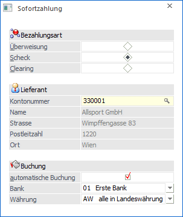
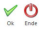

Im Menüpunkt
1 Buchen
1 Zahlungsverkehr
1 Sofortzahlung
oder Schnellaufruf
1 STRG + R
können Überweisungen und Schecks gedruckt werden, ohne erst eine Zahlungsvorbereitung im Modul Zahlungsverkehr machen zu müssen.
Gedacht ist diese Funktion für Szenerien, in denen z.B. ein Lieferant zur Tür hereinkommt, eine Lieferung bringt und dafür z.B. einen Scheck möchte.
Wählen Sie den Menüpunkt an und geben Sie die Lieferantennummer ein. Dann wählen Sie die gewünschte Zahlungsart, entscheiden von welcher Hausbank die Überweisung getätigt werden soll und ob der Geschäftsfall sofort automatisch gebucht werden soll.

Ø Bezahlungsart
Sie können Überweisungen durchführen, Schecks drucken, oder die Zahlungsdaten auf Clearingdatei ausgeben.
Ø Kontonummer
Geben Sie die Kreditorennummer ein, bei der Sie offene Zahlungen begleichen wollen. Durch Drücken der F9-Taste kann nach allen Lieferanten gesucht werden.
Buchung
Ø automatische Buchung
Durch Aktivieren der Checkbox "Automatische Buchung” wird gesteuert, ob automatisch im Hintergrund ein Buchungssatz für die WinLine FIBU gebildet werden soll.
Ø Bank
Selektieren Sie die Hausbank, über die die Zahlung abgewickelt werden soll.
Ø Währung
Selektieren Sie die Währung, in der die Zahlung durchgeführt werden soll.
Buttons

Ø Ok
Nach Bestätigen der Eingaben mit dem OK-Button öffnet sich die Zahlungs-Maske, in der entweder bereits bestehende Offene Posten selektiert und der Zahlungs- bzw. Skontobetrag bearbeitet werden kann, oder einfach eine neue (fortlaufende, automatisch vorgeschlagene) Fakturennummer vergeben wird und der gewünschte Zahlungsbetrag eingegeben wird.
Ø Ende
Durch Anklicken des Ende-Buttons wird das Fenster geschlossen.